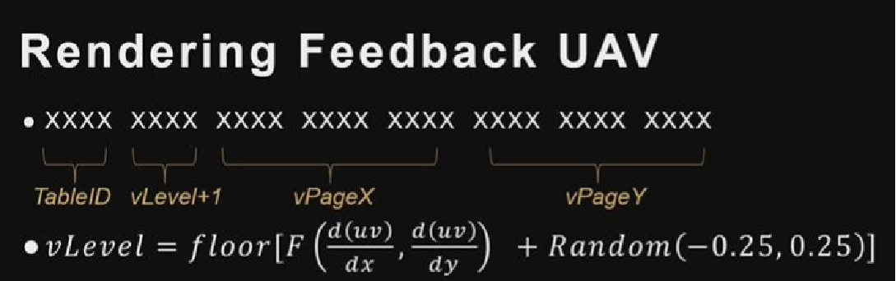

# Virtual Texture 解析
FVirtualTextureSystem是整个 Virtual Texture 的管理类，几乎所有的 VT 系统的操作都会通过他来进行调度。FVirtualTextureSpace用来管理 Page table 的，其数量上有明显的上限，只有 16 个。一个 Page table 资源对应一个 FVirtualTextureSpace 对象。这里限制的原因应该是标志位的限制，我们在 FeedBack 中仅有 4 位留给我们判断属于哪个 Page table。FVirtualTexturePhysicalSpace用来管理 Physical Texture 部分。Physical Texture 的数量是没有限制的。引擎会把所有拥有相同FVTPhysicalSpaceDescription且没有勾选bSinglePhysicalSpace(主要用于 RVT) 的将放入一个 PhysicalSpace。这个过程是引擎自动判断的，需要注意的是，share PhysicalSpace 和 share Pagetable 是矛盾的，因为 share PhysicalSpace 就意味着 Physical Address 不能是一样的，所以 Page Table 无法 share（但可以分布在一个 texture 的不同 channel 里）。FAdaptiveVirtualTexture用来管理 Indirect 部分。在后面我们讲到。
整个 Virtual Texture 的流程几乎都在各自 renderer 中体现出来。在 Render 中主要的步骤其实有三步
- 在 Render 开始阶段对
FVirtualTextureSpace管理的固定数量的 Page table 进行判断，通过bNeedToAllocatePageTable看是否需要渲染资源的创建。也就是创建新的 Page table 资源，这个 page table 最多 16 张 - 更新整个 VT 系统，包括解析 FeedBack，更新 pagetable 和 physical texture。
- 在 Basspass 之后，我们读取在 Basspass 中写入的 feedback，供下一帧使用
# FeedBack
FeedBack 是我们分析当前屏幕中，使用 VT 的具体情况。UE4 中并没有单独的 VT feedback Pass，而是在材质 Shader 的最后调用 FinalizeVirtualTextureFeedback 将当前帧的 Request Page 信息 写入 feedback UAV Buffer。
从 RenderDoc 中我们可以看到是在 Basepass 中进行的写入操作，其默认空值是 FFFFFFFF。如果这个物体的材质没有采样 VT，那么它就不会写 FeedBack，也就是默认值 0xFFFFFFFF。
# 生成 FeedBack

- TableID：FeedBack 所在的像素块的纹理对应的 PageTable 的 ID。因为我们在材质中采样这个贴图的时候，我们是知道我们这个 pageTable 的 ID 的。（16 个 PageTable）
- vPageX：所在 PageTable 中的 X 坐标，根据 UV，Tile 数量和 PageTable 偏移求出来。
- vPageY：所在 PageTable 中的 Y 坐标，根据 UV，Tile 数量和 PageTable 偏移 求出来。
- vLevel：这里并不是简单的 Mipmap，因此 UE 换了个名称叫做 vLevel。做法是当前的 Mipmap + 一个随机值，这样的话在静止画面下，这个值实际上是一个区间，每帧我们的 vLevel 就是不同的，这样，我们就能根据 TAA 来做一些混合操作。
Feedback 是和 basepass 同时进行的，在 Basspass 之后我们将回读这个 Buffer，提供给下一帧的 update 进行分析和使用。
# Update
在 FVirtualTextureSystem 中，最为关键和重要的步骤我们大致分为 5 个流程来进行。

# 解析 FeedBack
这里进行将 Feedback 解析，将其转化位一个名为 FUniquePageList 的数据结构中。FUniquePageList 内部是一个 Hash Table，通过 hash Page Request 得到 Page 的索引并进行累加次数，进而统计每个 Page 出现的次数。

这里的解析是实际上根据解析数量的不同可以进行多线程的操作，比如规定每一万个数据划分一个线程进行处理。这里我们按单线程的方案进行讲解。
# 生成 UniqueRequest
我们得到的 FUniquePageList 并不是一个具备操作性的数据集，因为它只记录了出现的 Page 和 Tile 出现的次数，我们还需要知道这里面数据的是否需要更新。我们这里将 FUniquePageList 数据转化为能够为我们提供更多信息的 UniqueRequest 数据。

从上图我们可以看出，整个 UniqueRequest 内部有多种的请求类型，例如：
- LoadRequest：这一帧需要画它，需要把这个 Tile 加载进来。这是用来更新 Physical Texture 的。
- MappingRequest：和 LoadRequest 对应，不过它记录的是用来更新 PageTable 的数据，需要在 LoadRequest 完成后执行。
- DirectMappingRequest：physical texture 存在，直接将 physical address 写入 PageTable。
- ContinuousUpdateRequest：在 RVT 中可以设置，这个 Tile 是否需要持续更新，每帧都会去更新这个 tile。

# 加载和 sort 策略

当我们获取了所有的更新数据之后，我们将进行加载排序，这是因为我们需要对加载的优先级进行判断，而不是一股脑的都在同一帧处理大量的数据。如果把所有需求都在同一帧进行加载，这将会导致相当大的卡顿。简单的介绍我们的排序策略。
- 当 Physical Texture 没有空间时，我们采用的卸载策略为 LRU，优先替换最久未访问并且 Mip 分辨率最低的 Block。我们每帧都会把当前的帧数，根据 feedback 的返回数据对使用到的 Physical Texture 进行写入。也就是说每个 Physical Texture 都保留最近一次使用到的帧数，从而能够进行判断谁是最久没有被使用到的。
- 我们每帧最大的加载量为 64，我们将计算所有的 LoadRequest 的优先级，如果一帧里面的请求过多，只接受优先级前 64 个。
- 如果想要加载低 mipmap，需要加载这个贴图高几个 mipmap 的贴图。也就是说，我们优先加载比需要的这个贴图 mipmap 等级高的贴图，这是为了降低渲染压力。物理贴图块会分帧渲染，每帧只渲染一部分 Block。当最低级的 Mip 都没有时，实际上分帧之后加载速度仍然是非常快的，对分帧加载这个过程也是基本无感知的。
- 如果出现的次数特别多，那么我们会把他设置为我们最高优先级，如果是普通的次数，我们的
# SubmitRequests 和 Finalize
当我们把需要在这一帧操作的 request 筛选出来后，将提交我们的 Requests。其会更新我们的 PageTable 和 Physical Texture。
UE4 并未使用 Compute pipeline 来更新 PageTable Texture，而是通过 Graphics Pipeline 在 VS 中生成，在 PS 中存储到 PageTable RenderTarget，并且使用 Instancing Rendering 的方式，最多一次处理 16 个 PageTable Quad，这样处理与 CS 基本相同。
而我们的 Physical Texture 则根据自己不同的 IVirtualTextureFinalizer 类型进行不同的 Finalize 操作。传统的 svt 对应的 FVirtualTextureUploadCache 将硬盘里的数据直接进行拷贝到对应的 Physical Texture 区域。而 Runtime 的 FRuntimeVirtualTextureFinalizer 将会启用 RDG 渲染那块区域最后进行 Copy 到对应的 Physical Texture 区域。
# 采样
VirtualTexture 的采样数据跟普通的贴图采样不同。其主要分为两部分，第一部分是获得对应的 PageTable ，第二步是根据 PageTable 的值采样我们的 physical Texture 。这两个函数操作都是在我们的 BasePass 中，其中在 TextureLoadVirtualPageTable 中不仅采样整个点的 PageTable ，而且还进行了 FeedBack 的写入。我们以 RVT 位例子。

第一个函数的参数，这个是和材质中这个贴图的一一对应的 PageTable。存储在 Material uniform 里面。因此我们可以直接进行他的采样。
# TextureLoadVirtualPageTable
通过 TextureComputeVirtualMipLevel 函数计算 RVT 的 mipLevel，为了实现较好的混合效果，这里根据当前帧 Id 生成交错的随机 noise 扰动 level。4bit 得到 mipLevel，最多 16 级（0~15）
# TextureVirtualSample